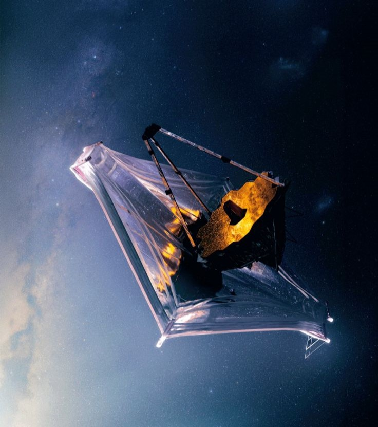

This project aims to bridge that gap by studying and adapting advanced image capturing and processing techniques used in space telescopes. Instead of building new hardware, the focus is on integrating software-based enhancements—such as noise reduction algorithms, motion stabilization, and multi-frame image reconstruction—into standard camera systems or mobile apps. By doing so, the project seeks to make high-resolution imaging more accessible without requiring specialized or expensive equipment.
